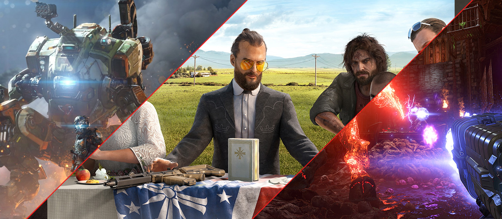
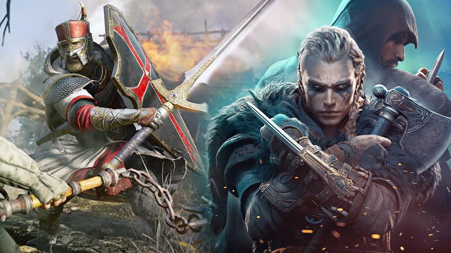
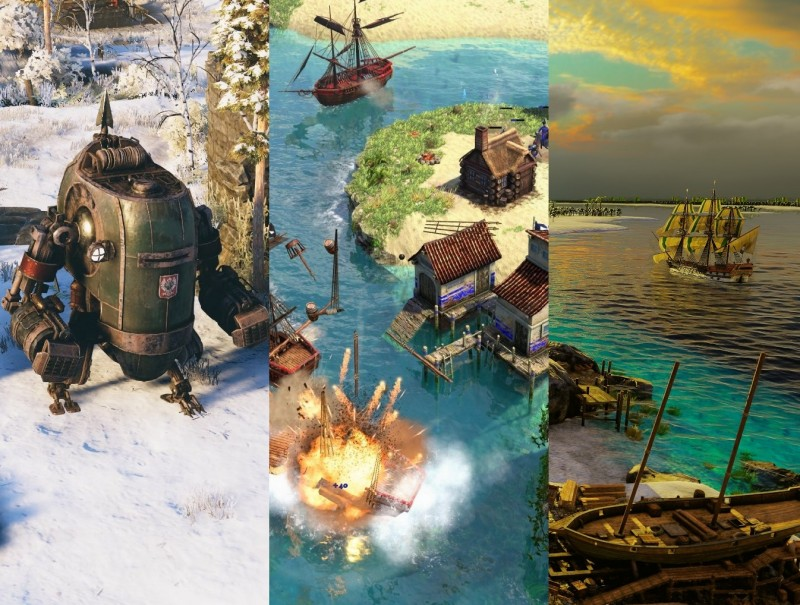
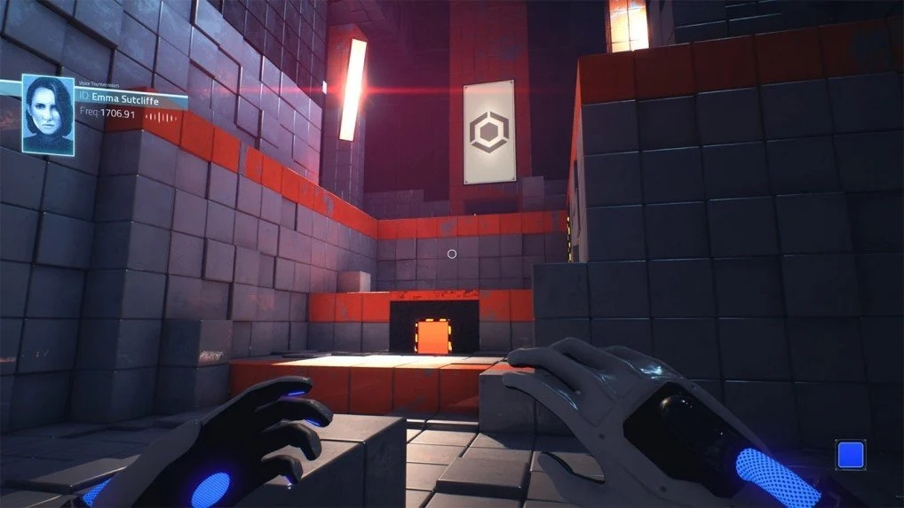
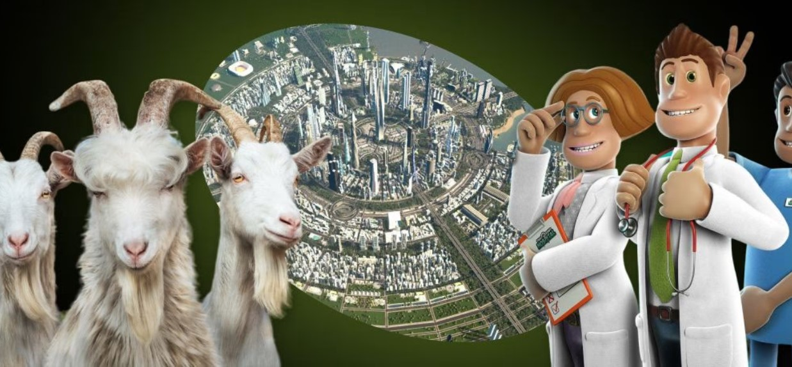
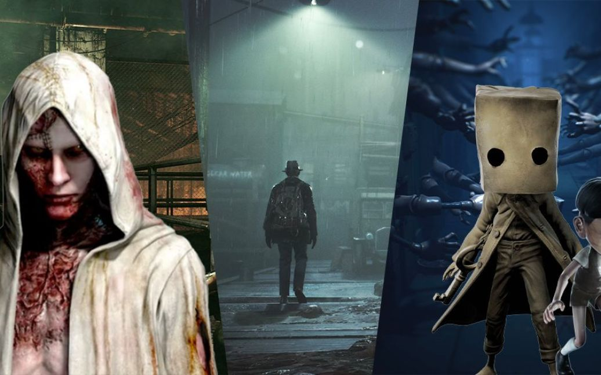

Игровая полка
Экшен
Игры этого жанра предлагают быстрые и динамичные действия, часто с боями и стрельбой. Экшен-игры часто ориентированы на адреналин и включают в себя разнообразные задачи, такие как стрельба, борьба и выполнение миссий в реальном времени. Игроки должны быть готовы к событиям, развиваться в боевых навыках и быстро реагировать на изменяющиеся ситуации.
- Call of Duty
- Grand Theft Auto
- Assassin's Creed
Серия военных шутеров, предлагающая боевые операции и многопользовательские режимы.
Открытый мир, в котором игрок может свободно исследовать и совершать различные действия.
Исторический экшен с акробатическими трюками и скрытными убийствами.
Ролевые игры (RPG)
В RPG игрок управляет персонажем и развивает его навыки, характеристики и историю в течение игры. Этот жанр часто основан на сюжете и включает в себя принятие решений, взаимодействие с нпс (неигровыми персонажами), выполнение квестов и исследование фэнтезийных миров.
- The Witcher 3: Wild Hunt
- Final Fantasy XV
- Skyrim
Фэнтезийная RPG, в которой игрок играет роль охотника на чудовищ, Геральта из Ривии.
Фэнтезийная RPG с глубоким сюжетом и множеством персонажей.
Открытый мир RPG, позволяющий игроку свободно исследовать фэнтезийный мир и выполнять разнообразные задачи.
Стратегии
Игры в жанре стратегий требуют от игрока стратегического мышления, планирования и принятия решений. Они могут охватывать различные аспекты стратегии, включая военные тактики, управление ресурсами, построение исследований и управление целыми империями. В этих играх игроки могут выработать стратегии для достижения целей и преодоления препятствий.
- StarCraft
- Civilization VI
- Age of Empires
Стратегия в реальном времени, где игроки управляют разными расами и сражаются за ресурсы и территории.
Пошаговая стратегия, где игроки развивают свою цивилизацию с античных времен до будущего.
Историческая стратегия, которая позволяет игрокам строить и управлять цивилизациями на разных этапах истории.
Головоломки
Игры в жанре головоломок предлагают игрокам разнообразные задачи и головоломки для разгадывания. Они могут включать в себя логические головоломки, головоломки на сообразительность, а также физические головоломки. Игроки должны применять логику, креативность и интеллект, чтобы найти решения для представленных задач.
- Portal
- Tetris
- Limbo
Популярная головоломка с использованием порталов, где игроки должны перемещать объекты и сами себя через порталы для прохождения уровней.
Классическая аркадная головоломка, в которой игроки собирают и вращают блоки, чтобы заполнить ряды.
Атмосферная платформенная головоломка с глубокой сюжетной составляющей.
Симуляторы
Игры в жанре симуляторов стремятся имитировать реальные процессы, ситуации и действия. Этот жанр позволяет игрокам переживать определенные аспекты реальной жизни, будь то вождение автомобиля, управление бизнесом, пилотирование самолета или даже жизнь фермера. Симуляторы часто предоставляют игрокам реалистичные среды и взаимодействия.
- The Sims
- Microsoft Flight Simulator
- Football Manager
Симулятор жизни, позволяющий игрокам создавать и управлять виртуальными персонажами, развивать их дома и взаимодействовать в виртуальном мире.
Симулятор полета, предлагающий игрокам управлять разными видами воздушных судов и исследовать реалистичные летные сценарии.
Симулятор футбольного менеджера, где игроки управляют футбольными клубами, проводят трансферы и принимают стратегические решения.
Ужасы
Игры в жанре ужасов создают атмосферу страха и напряжения, их целью является погрузить игрока в мрачный и ужасающий мир. Эти игры могут включать в себя элементы психологического ужаса, выживания и мистики. Игроки часто сталкиваются с монстрами, призраками, зомби и другими ужасными существами, и должны использовать свой интеллект и ресурсы, чтобы выжить.
- Resident Evil
- Outlast
- Amnesia: The Dark Descent
Знаменитая серия хоррор-игр, в которой игроки борются с зомби и другими мутантами.
Игра с видом от первого лица, в которой игрок является журналистом, исследующим психиатрическую больницу с мрачными секретами.
Игра с акцентом на психологический ужас, где игроки исследуют старый замок и сталкиваются с ужасными событиями.